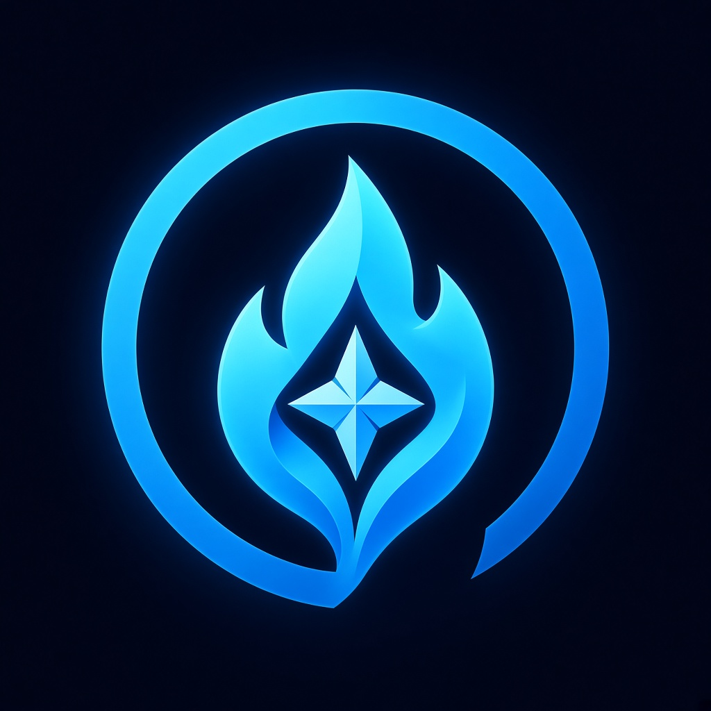

Single JPEG layer. Glow halo, bevelled star, near-black background. Star and ring merge at 29 pt.
Five vector layers: navy gradient, ¾ ring (gap top-right), flat two-tone ice flame, white star. No baked effects — Liquid Glass supplies the depth. Background lifted for dark-wallpaper contrast.
Same, without the star. Cleanest at 29 pt; candidate for the small-size and tinted appearances if the star proves too fine.